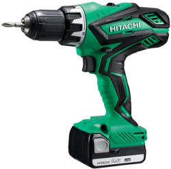
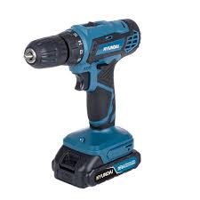

| Név | Leírás | Ár | Készlet |
|---|---|---|---|
 Sárga fúró
Sárga fúró
|
Nagy teljesítményű, sárga színű fúró, fémhez és fához. | 15 000 Ft | 1–5 db raktáron |
 Piros fúró
Piros fúró
|
Kompakt, piros színű fúró, otthoni használatra. | 22 000 Ft | Csak rendelésre |
|  Zöld fúró | Akkumulátoros fúró, zöld színű, hordozható. | 28 000 Ft | 5+ db raktáron |
|  Kék fúró | Ipari felhasználásra alkalmas, kék színű, nagy nyomatékú fúró. | 45 000 Ft | Csak rendelésre |